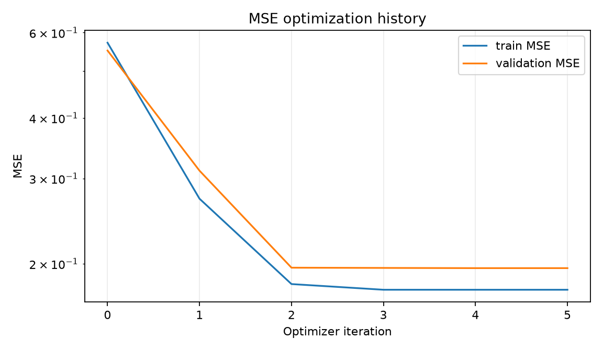
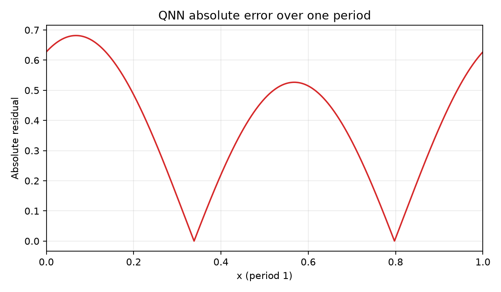
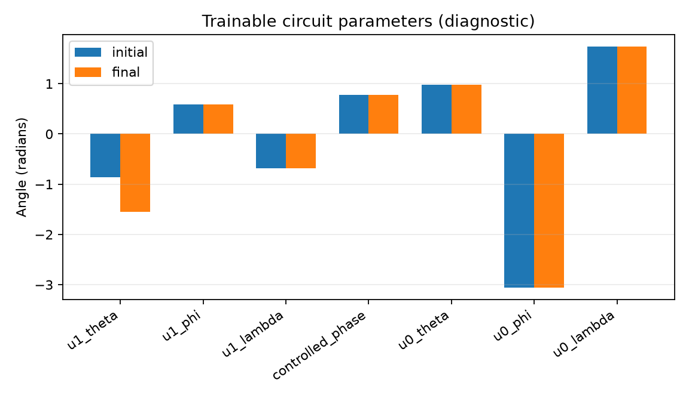

Comparison group: periodic-function-mse-ry-angle-encoding
Training loss: MSE only; no Frobenius/process-fidelity term or PINN residual.
Encoding: RY(2πx)|0⟩ on qubit 0, x∈[0,1), period 1.
Readout: ideal Pauli-Z expectation on qubit 0.
{
"run_id": "20261017T005204349669Z_periodic-function-mse_seed-0049_d6de8ecf",
"status": "FINISHED",
"comparison_group": "periodic-function-mse-ry-angle-encoding",
"protocol_version": "0.1.0",
"objective": "training-set mean squared error only",
"loss_excludes": [
"process fidelity",
"Frobenius/unitary alignment",
"PINN/physics residual",
"frequency labels"
],
"encoding": "RY(2*pi*x)|0> on q0; x in [0,1), period 1",
"ansatz": "qft2_trainable_u_cp_u_swap",
"readout": "Pauli-Z expectation",
"seed": 49,
"data_seed": 314159,
"optimizer": "L-BFGS-B",
"iterations": 5,
"function_evaluations": 48,
"optimizer_success": true,
"optimizer_message": "CONVERGENCE: NORM OF PROJECTED GRADIENT <= PGTOL",
"elapsed_seconds": 0.059175551003136206,
"initial_train_mse": 0.5718850402001354,
"final_train_mse": 0.1767113761007983,
"validation_mse": 0.19584592858661237,
"test": {
"mse": 0.18989335942825117,
"rmse": 0.4357675520598696,
"r2": -0.03270329771995839
},
"constant_baseline_test": {
"mse": 0.1898933590235803,
"rmse": 0.43576755159555,
"r2": -0.03270329551922346
},
"known_frequency_fourier_baseline_test": {
"mse": 7.212394812967852e-32,
"rmse": 2.6855902168737234e-16,
"r2": 1.0
},
"spectral_coefficient_mse_k0_to_16": 0.005720862097000302,
"target_peak_frequency": 1,
"predicted_peak_frequency": 1,
"frequency_peak_correct": true,
"qft_process_fidelity_diagnostic_only": 0.0018395141416287207,
"initial_qft_process_fidelity_diagnostic_only": 0.0014377045308242645
}




